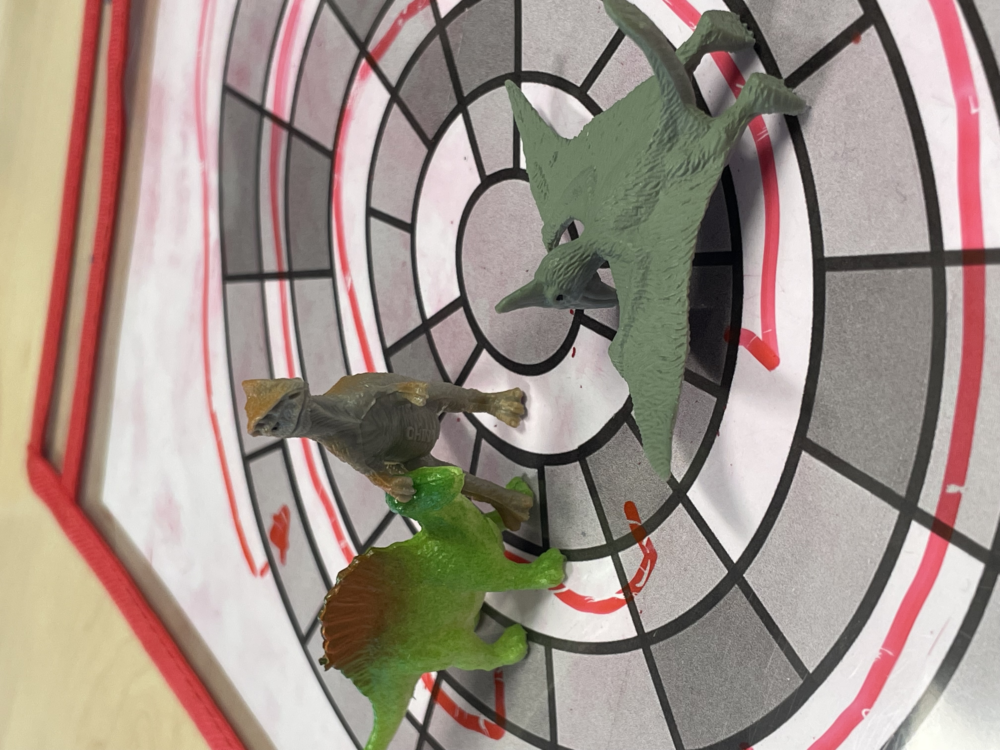

though a project in the beginign ofthe3rd quarter of the school year, we exsplored hot and why people create board games by creating one of our own. the following are the rules of the game which where tested and reviewd before they where inproved. Start of play/ turn system To start the game, each player chooses a dinosaur piece, they place this piece upon the established starting positions Each round is composed of up to 4 turns on each turn the player can move Turn order is determined by players at the start of the game and must be consistent though the game Game pieces: 2 6-sided dice 4 dinosaurs mini’s To move during a turn: roll 2d6 If the lower number is odd, subtract the two values, and move that # of spaces clockwise. If the lower number is even, add the two values, and move that # of spaces clockwise. If both numbers are the same, you just lost your turn If the two identical numbers are 1’s then they force the next player to forfeit their turn. To move to the next level: Must get to the counter-clockwise most descend (blocks that connect two layers) Move in a clockwise direction The goal: Be the first player to reach the core of the board If you end your turn on the same space as another player, both must roll a die The one with a higher number: Moves 1 space forward The one with a lower number: Moves 1 space backwards If roll the same number: Stay where you are Dice must be rolled into a bowl If you roll two 6’s during your turn, you can swap with any other player You need to hit the exact number to win the game.
2d coded gamebelow are a few exsamples of sample code from the coding project titled as "coins deserv to be eayen.py"
Fox=Actor("Samual-mander")
fox.pos = 100,100
coin = actor("New Piskel")
coin.pos = 200, 200
if game_over:
screen.fill("pink")
screen.daw.text("Final Score: " + str(score), topleft(10,10), fontsize =60)
if keyboard.left:
fox.x=fox.x-4
elif keyboard.right:
fox.x = fox.x + 4
elif keyboard.up:
fox.y= fox.y - 4
elif keyboard.down:
fox.y = fox.y + 4
1. the first piece of sample code is used to define the actors, actors are basically pieces on the board, if it was a chess game they would be the individual pieces, they all need to be defined with an image and a certain set of location standards, but this first piece of code only contains there cosmetic standards. 2. the second piece of code is used to determine the win condition of the game.in this game a salamander, defined as fox, is tasked with collecting a fern. once this fern is collected the game is completed and the victory condition is achieved, the above code just executes this win condition. 3. and the final piece of code is used to control how the player moves there "actor" this is the primary function of the game because without it it would just be an image with an unachievable victory condition. basically than the player presses a certain arrow key the 'fox' piece moves in that direction without a corresponding movement to keyboard mapping software.